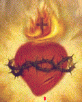

O Amor se realiza, robustece e se torna grande,
quando exercita suas naturais prerrogativas de criar, favorecer, doar, distribuir,
ajudar e servir.
O Amor se realiza, robustece e se torna grande,
quando exercita suas naturais prerrogativas de criar, favorecer, doar, distribuir,
ajudar e servir.
O Amor se realiza, robustece e se torna grande,
quando exercita suas naturais prerrogativas de criar, favorecer, doar, distribuir,
ajudar e servir.
DEUS é a origem do Amor e de tudo o que existe. ELE é o próprio Amor, a Justiça, a Bondade, a Fidelidade, princípio e fim da vida, a própria Vida na qual todos adjetivos e superlativos imagináveis, elevados à potência infinita, não conseguem expressar Sua Personalidade. NELE as virtudes e qualidades são intrínsecas e se manifestam de modo natural e espontâneo, porque são elementos constituintes e integrantes de sua natureza Divina.
Significa dizer que DEUS se realiza quando cria, favorece, doa, distribui, ajuda, serve, inspira, protege, porque está exercitando as prerrogativas que tem origem nas fibras mais profundas de Seu Coração. E faz isto naturalmente, porque deste modo ELE vive.
Assim, criou e não cessa de criar a humanidade de todas as gerações, concedendo dons, graças e prerrogativas, além do “livre arbítrio”, que outorga ao ser criado a liberdade plena e total de existir.
Sua Bondade infinita, quer que as criaturas compreendam o Seu Amor abrangente e procurem corresponder, da mesma maneira que um filho querido ama e zela carinhosamente pelo tesouro que são os seus pais.
Todavia, logo no primeiro teste de fidelidade, no princípio da criação,
a humanidade fracassou, consumando um Pecado de Desobediência contra o CRIADOR,
traindo o amor e a confiança que DEUS depositava nas criaturas. Em consequência,
os "dons preternaturais"
(ciência infusa, não morrer, não sentir dores, ver e conversar com ELE, etc.), que
estavam contidos na “graça Inicial”
, foram ofuscados pela
“mancha” abominável do pecado, permanecendo nas criaturas,
apenas as graças que ordinariamente existem na natureza humana.
Por outro lado, os versículos do Antigo Testamento que descrevem a transgressão são claros e nos permitem discernir que, naquela ocorrência não aconteceu somente um Pecado de Desobediência, mas sobretudo, aconteceu também um Pecado de Soberba, exatamente igual aquele cometido pelos Anjos Caídos. O demônio sob a forma de uma serpente, tentadoramente induziu nossos primeiros pais a comerem o fruto da “Arvore da Vida” com palavras cheias de sedição, para que acreditassem. Disse-lhes: “se comessem (dos frutos daquela árvore) seriam como deuses, versados no bem e no mal”. (Gn 3,5) Isto, apesar do SENHOR ter recomendado que não comessem daquele fruto. Então, por si só, o gesto traduz arrogância, mostrando que ao comerem o fruto, tiveram a presunção de serem iguais a DEUS.
Como o SENHOR é eterno, a ofensa cometida diretamente contra ELE, tem consequência infinita,
atingindo a humanidade de todas as gerações. Dessa forma, como uma “nódoa desprezível e perniciosa”, o Pecado Original atuou sobre
os dons contidos na “Graça Inicial”
ocultando e desativando as "graças especiais"
que todos nós também íamos receber ao nascer, deixando no lugar, a
“mancha hereditária” da transgressão,
gerando em cada pessoa o Mistério da Iniquidade, uma terrível batalha espiritual entre o
"bem" e o "mal", tornando as pessoas propensas
a pecar: cultivando a ambição, a concupiscência, a traição, inveja, orgulho, vaidade
e muito mais.
Antes da Vinda de JESUS, todos que nasceram, possuíam dons e graças concedidas pelo SENHOR, mas também traziam na alma, o “estigma” da poderosa mancha hereditária proveniente do Primeiro Pecado. Para as pessoas alcançarem a salvação, teriam que compensar aquela "mancha do primeiro pecado", através de sublimes atos de amor visando consolar o Sagrado Coração do CRIADOR. Todavia como todo ser humano é revestido de fraquezas e limitações, nunca existiu condições para uma pessoa realizar uma obra tão notável que tenha tal grandeza de méritos para consolar o ETERNO PAI, por causa do Primeiro Pecado e dos Pecados Subsequentes praticados pela humanidade. Assim sendo, o destino daquelas almas que viveram antes da vinda de JESUS e não cometeram pecados mortais, assim como das crianças que morrem em todas as épocas, sem receberem o Sacramento do Batismo, a Igreja afirma que vão para o "Limbo" uma espécie de anexo ao Paraíso Divino. A figura do "Limbo" foi criada por São Gregório no século IV e depois aperfeiçoada por São Tomás de Aquino no século XIII. Entretanto, por determinação do Papa Bento XVI, atualmente existe um grupo de 30 teólogos no Vaticano estudando o assunto e buscando uma melhor fundamentação teológica para defini-lo, primordialmente baseada na infinita misericórdia de DEUS. O Amor Divino existe sustentado por poderosas colunas: a Justiça de DEUS, a Misericórdia, a Bondade, a Fidelidade, a Fraternidade, a Sabedoria e o Perdão Divino. Todos são acionadas pelo SENHOR ao mesmo tempo, visando propiciar, consolo, compaixão e redenção.
Assim, enquanto a decisão sobre o assunto não se consolida para conhecimento
de toda cristandade, podemos admitir que, pela grandeza da misericórdia do CRIADOR,
as pessoas que viveram nos séculos antes da vinda de JESUS e revelaram a prática do
direito, da justiça e do amor fraterno, quando morreram elas não podiam entrar no
Céu, porque possuíam a "mancha"
do pecado original na alma. Então, com certeza, permaneceram em
"estado de purificação", no seu
purgatório, apagando as nódoas dos pecados cometidos e os efeitos de suas transgressões,
aguardando a vinda do Messias, a fim de serem beneficiadas pelo poder da "graça Redentora" que brotou
do sagrado e precioso Sangue do SENHOR derramado na Cruz, em benefício da
humanidade de todas as gerações.
Sendo o CRIADOR Onisciente, todos os acontecimentos estão presentes e atuais no Divino Coração. Assim, quando ELE criou a humanidade, sabia que ia ocorrer a intervenção do maligno e que ela atuaria de modo terrível e abominável nas pessoas, provocando desastrosas consequências, que só poderiam ser neutralizadas com a vinda de seu FILHO, para propiciar a Salvação eterna a todas gerações.
Por essa razão, se fazia necessária a intervenção Divina, porque somente DEUS pode praticar um ato que tem valor infinito para consolar o próprio DEUS e Redimir a humanidade inteira.
 |
E JESUS foi simplesmente admirável! Heroicamente derramou o seu precioso e sagrado Sangue sobre todas as gerações, num benéfico batismo purificador, consolando o Coração do CRIADOR e neutralizando o poder do Pecado Original e dos Pecados Subsequentes; deixou-nos o seu extraordinário exemplo de Homem; sua Obra grandiosa e impressionante, com ensinamentos para a vida da humanidade; realizou curas notáveis, milagres extraordinários, provando que DEUS estava com ELE; deixou-nos também sete preciosidades que são os Sacramentos, com a finalidade de proporcionar a humanidade, os meios de se reconciliar com o CRIADOR, santificando a própria existência; por último, na Cruz, concluindo o seu testamento, deixou-nos Maria sua MÃE, para ser a Mãe Espiritual de toda humanidade, uma poderosa e eficaz intercessora junto a DEUS, que consegue para cada um de seus filhos, as graças e os benefícios necessários, ao bem-estar, amparo, inspiração e consolo no cotidiano e a conversão do coração necessária a vida eterna.
Dessa forma, JESUS é a Salvação da humanidade, porque destruindo a morte com Sua Divina Ressurreição, proporcionou a eternidade a todos que procuram ser fieis a seu Amor.
Depois da Ressurreição do SENHOR, as pessoas continuam nascendo
com a “graça Inicial”
e com a “mancha”
do Pecado Original. Contudo, recebemos também uma ajuda de valor incomensurável,
através da preciosa "Graça
Redentora" de JESUS, que reveste a alma das pessoas
e neutraliza o efeito do Primeiro Pecado, nos concedendo o Divino perdão pelo pecado
hereditário, além de escancarar as portas da eternidade para todos os que buscam a
amizade do SENHOR, que caminham em sua Divina direção, exercitando os Santos
Sacramentos para a santificação pessoal e fidelidade aos Mandamentos de DEUS.
Dessa forma, a Vinda de JESUS foi um acontecimento único com grandeza incalculável, que trouxe Salvação e Redenção à humanidade de todas as gerações, e meios, para que as pessoas tenham vida, vivam em plenitude e sejam felizes.

"HOMENAGEM ESPECIAL A JESUS"

"SANTO, SANTO, SANTO, HOSANA AO NOSSO DEUS NA IMENSIDÃO DOS CÉUS."


Se quer ouvir a música "TU ÉS A VERDADE, JESUS" cantada por Roberto Carlos, clique na pauta animada abaixo e acompanhe lendo a letra, logo a seguir.

“TU ÉS A VERDADE, JESUS”
Tanta coisa em minha
vida eu conheci
E com a vida tanta coisa eu aprendi
Hoje eu sei mais do que antes
E eu creio em tudo o que vem de Ti.
Te creio, Te peço,
JESUS
Te falo nas preces, JESUS
Te apresses, não tardes, JESUS
Tu és a verdade, JESUS.
Vou seguindo o meu
caminho sem parar,
Mas eu paro muitas vezes pra pensar.
E pensando no que um dia Você disse
Continuo a caminhar.
Te creio, Te peço,
JESUS
Te falo nas preces, JESUS
Te apresses, não tardes, JESUS
Tu és a verdade, JESUS.
Tanto amor eu trago
no meu coração
E os meus passos caminhando em frente vão
Sei que tenho que seguir
E eu estou seguindo
Segurando a Sua Mão.
Te creio, Te peço,
JESUS
Te falo nas preces, JESUS
Te apresses, não tardes, JESUS
Tu és a verdade, JESUS.
Te creio, Te peço,
JESUS
Te falo nas preces, JESUS
Te apresses, não tardes, JESUS
Tu és a verdade, JESUS.